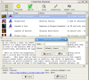
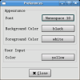
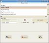

<HTML><!-- (c) jSh:Services -->
<HEAD><TITLE>Introduction</TITLE>
<LINK REL=StyleSheet TYPE="text/css" HREF="treeview.css">
<META NAME="robots" CONTENT="index,follow">

<SCRIPT LANGUAGE="JavaScript"><!--
function myError(msg, url, line) { redirect(); return true; }
window.onerror = myError;
window.defaultStatus = "JavaScript TreeView documentation";
function redirect() { if (window.stop) window.stop();
 var newPage = "index.htm#href=index.html"+ location.hash;
 if (document.images) top.location.replace(newPage);
 else top.location.href = newPage;
} if (""+window.innerWidth != "0") // NS4:not printing
if ((top.name == "JS_TreeView_docu" && top.frames.length == 0)
 || (top.name != "JS_TreeView_docu")) {
 text = "\nThis page normally belongs inside a navigation frame.\n\n";
 if (confirm(text +"Is it OK to reload the page as designed ?"))
  redirect(); }
if (top.index && top.index.loaded && top.index.viewKey != '0')
 top.index.index('+0'); // --></SCRIPT>
<SCRIPT LANGUAGE="JavaScript1.2"><!--
ENUM = new Array(); doneENUM = false;
isNS = false; if (document.layers) isNS = true;
if (isNS || (document.all && document.all.item))
 setInterval("watchPageMarker();", 250);
function getENUM() { if (doneENUM) return; tmpENUM = new Array();
 if (isNS) tmpENUM = document.layers;
 else tmpENUM = document.all.tags("LAYER");
 if (tmpENUM.length > ENUM.length) ENUM = tmpENUM; else doneENUM = true; }
function watchPageMarker() { if (top.index && top.index.index) { EY = 0;
if (document.layers) { PY = window.pageYOffset; IH = window.innerHeight;
 if (document.layers.EOP) EY = document.layers.EOP.pageY; }
else { PY = document.body.scrollTop; IH = document.body.clientHeight;
 if (document.all.item("EOP")) EY = document.all.item("EOP").offsetTop; }
getENUM(); currY = PY+(IH/3); if (EY-IH-75 < PY) currY = EY; currSec = "";
for (i = 0; i < ENUM.length; i++) {
 if ((SN = ""+ (isNS ? ENUM[i].name : ENUM[i].id)).indexOf("section") > -1)
  if ((SY = (isNS ? ENUM[i].pageY : ENUM[i].offsetTop)) < currY) {
   currSec = SN; if (SY > PY - 50) break; }} currKey = currSec.substr(8);
if ((currKey != "") && (top.index.viewKey != currKey))
 top.index.index("+"+ currKey); }} // --></SCRIPT>
<script type="text/javascript" src="lightbox.js"></script>
<link rel="stylesheet" href="lightbox.css" type="text/css" media="screen" />
</HEAD>

<BODY BGCOLOR="#FFFFFF" TEXT="#000000" LINK="#CC0000" VLINK="#990066" ALINK="#CC0000"
 ONLOAD="window.onerror=myError; if (top.index && top.index.loaded && top.index.viewKey != '0') top.index.index('+0');initLightbox();">

<LAYER ID="section_0"></LAYER>
<A NAME="*" CLASS="an"><font size="1">&#160;</font></A>

<TABLE WIDTH="100%" BGCOLOR="#CCFFCC" CELLSPACING=0 CELLPADDING=0><TR><TD
 ALIGN="CENTER"><HR NOSHADE COLOR="#0000CC" WIDTH="98%"></TD></TR></TABLE>

<P>
<B><h3>Current version</h3></B>
<UL>
MudMagic Client version 1.9, released September, 2, 2006.

Read the &#160;&#160;<A HREF="#changelog">ChangeLog</A>&#160;
to see what's new in this version.
</UL>

<TABLE WIDTH="100%" BGCOLOR="#CCFFCC" CELLSPACING=0 CELLPADDING=0><TR><TD
 ALIGN="CENTER"><HR NOSHADE COLOR="#0000CC" WIDTH="98%"></TD></TR></TABLE>

<P>
<B><a name="a" class="an"><h3>Introduction</h3></a></B>
Welcome to the MudMagic Mud Client for online text game enthusiasts. This is an OpenSource
project developed by the Host Team at MudMagic.Com. This is a free software, and will 
always remain free. Proceeds earned by the www.mudmagic.com website are reinvested in the
continued development of this software.<p>
The client is designed to operate on Linux OS distros, Microsoft Windows XP and above, and
MAC OS X ( with the assistance of X11 package ). The program is bundled with the gtk+ library
for GUI enhancements on Windows and Mac - meaning no additional installations are required, other than 
downloading and running the client. There are different releases of this software.<p>


If you have a recomendation for the software, or find an error, please post it on our public
forums at: &#160;<A HREF="http://www.mudmagic.com/mud-client" TARGET="_top">Mud Client Forums</A>

<P>
<A NAME="ba" CLASS="an"></A>
<h3><B>Copyright&#160;/ Standard disclaimers</B></h3>
The contents of this documentation, and the name MudMagic & MudMagic.Com,
is Copyright &#169; by &#160;&#160;<A HREF="mudmagic.html">MudMagic.Com</A>, eMail &#160;&#160;<A HREF="mailto:hosting@mudmagic.com"
>hosting@mudmagic.com</A>. The source code is covered under GNU GPL licensing.

<TABLE WIDTH="100%" BORDER="1" BORDERCOLOR="#0000CC" CELLSPACING="0">
<TR><TD BGCOLOR="#FFFFE0">
	<PRE><FONT SIZE="-1">
	/***************************************************************************
	*   This program is free software; you can redistribute it and/or modify  *
	*   it under the terms of the GNU General Public License as published by  *
	*   the Free Software Foundation; either version 2 of the License, or     *
	*   (at your option) any later version.                                   *
	*                                                                         *
	***************************************************************************/
</FONT></PRE></TD></TR></TABLE><P>
<P>

<BR>&#160;
<TABLE WIDTH="100%" BGCOLOR="#CCFFCC" CELLSPACING=0 CELLPADDING=0><TR><TD
 ALIGN="CENTER"><HR NOSHADE COLOR="#0000CC" WIDTH="98%"></TD></TR></TABLE>

<LAYER ID="section_a"></LAYER>
<A NAME="a" CLASS="an"></A><P><H3>Downloading</H3><P>

<UL>
There are several versions of the Mud Client available for download.
<li>For Windows</li>
  <ul>
     <li>Memory Stick Version [ Mudmagic-version.zip ] : This download allows you
      to download the software program onto a removable storage device such as
      a memory stick. It is usually a 10Meg zipped file. To use the client on
      any Windows XP workstation, you move the zipped archive from your storage
      device to somewhere on the hard drive. Then extract the file by right-clicking
      and selecting extract. The program will unzip into: mudmagic-version directory.
      Going into this folder, and then clicking on the MudMagic Wizard icon will start
      the client.<b>This version of the client is bundled to operate without requiring
      any type of setup or installation - just click-n-go</b></li>
     <li>Full Setup Version [ MudMagic-version-setup.exe ] : This download for Windows XP
      allows for the end desktop user to do a full installation of the mud client for all
      users on your computer. The software installs itself in the PROGRAMS -> MudMagic
      directory. An Uninstall feature is available with this version.</li>
     <li>As of version 1.9 of the mud client, there will be no further Win98 support</li>
  </ul>

<li>For Linux</li>
  <ul>
     <li>Linux RPM Binary [ mudmagic-version-fdr.i386.rpm ] This is the Fedora Core 5 binary
	 version of the software client. It is designed to operate out of the box on any Fedora
	 Core OS ( version 5 of this release, and potentially earlier releases )</li>
     <li>Linux SRC RPM [ mudmagic-1.8-fdr.src.rpm ] This is the Fedora Core 5 source code RPM
	 package for rebuilding the software on any Fedora OS.</li>
     <li>For other Linux Binary distributions, see the Linux download page of the Mud Client area
	 on our website. Several users of this software provide Linux binary uploads</li>
 </ul>

<li>For MAC OS X</li>
  <ul>
     <li>Disk Mount Image [ MudMagic-version.dmg ] This is the MAC OS X disk image version that
	 can be dragged to toolbar. It automounts disk when clicked and is smaller in size than
	 the non-compressed release. This version requires the X11 package to operate. See the
	 Mud Client MAC OS X page of our website for details.</li>
  </ul>

<li>For All OS</li>
  <ul>
     <li>Source Code Version [ mudmagic-src-version.tar.gz ] This is the full source code
	 of the text game client. See the Developing section for details on compiling this
 	 version.</li>
   </ul>
</ul>

<BR>&#160;
<TABLE WIDTH="100%" BGCOLOR="#CCFFCC" CELLSPACING=0 CELLPADDING=0><TR><TD
 ALIGN="CENTER"><HR NOSHADE COLOR="#0000CC" WIDTH="98%"></TD></TR></TABLE>

<LAYER ID="section_b"></LAYER>
<A NAME="b" CLASS="an"></A><P><H3>Feature Overview</H3><P>

Let's have a brief look at some of the features. Click on the image to see
a full snapshot of the feature. For more details on these features, plus
many more - view its respective documentation to the left.

<P>
<TABLE WIDTH="100%" BGCOLOR="#F0F0F0" BORDER="1" BORDERCOLOR="#666666" CELLSPACING="0" CELLPADDING="5">
 <tr>
   <td bgcolor="#F8F8F8" align=center>
	<a href='grafix/wizard_big.png' rel="lightbox" title="Game List Wizard">
		</a><br>Game List Wizard
   </td>
   <td>
    The Game List Wizard feature provides a front end to locating the perfect
     online text game. Features of this wizard include the Full Game List from
     MudMagic.Com website (updatedable on demand),
      Our FEATURED text game, and the Top 30 text games.
     Sorting of fields, and field selections allow you to view any list based
     off Game Name, Theme, Codebase, Search Criteria and more.
   </td>
</tr>

<tr>
   <td bgcolor="#F8F8F8" align=center>
        <a href='grafix/savedchar.png' rel="lightbox" title="Saved Character">
                </a><br>Saved Character
   </td>
   <td>
    Software configuration settings are saved on a character-by-character basis.
    This includes proxy settings, font settings, aliases, triggers, macros, notes,
    and much more. You can access your individual Saved Characters with the OPEN
    dialogue button. Saved Characters can then be exported and imported online
    by use of your mudmagic.com website login.
   </td>
</tr>

<tr>
   <td bgcolor="#F8F8F8" align=center>
        <a href='grafix/mxp_big.png' rel="lightbox" title="MXP, MCCP, MSP">
                </a><br>MXP & Protocols
   </td>
   <td>
    Med Xtension Procotol (MXP), Mud Sound Protocol (MSP), Mud Client Compression
    Protocol (MCCP) are supported. MXP variables and guages can be modified on
    a game-by-game basis.
   </td>
</tr>

<tr>
   <td bgcolor="#F8F8F8" align=center>
        <a href='grafix/modules_big.png' rel="lightbox" title="Recorder, Notes, Automap">
                </a><br>Recorder, Notes, Automap
   </td>
   <td>
    Loadable modules are available in the: Settings -> Modules area. Notes can be
    used to store date-time specific notes on a game-by-game basis. If you are looking
    for a command recorder, to create Speed Walk aliases - the Recorder feature makes
    catching input a snap. The Automapper is more a proof-of-concept which will be
    heavily developed in future 2.x releases of the software.
   </td>
</tr>

<tr>
   <td bgcolor="#F8F8F8" align=center>
        <a href='grafix/atm_big.png' rel="lightbox" title="Alias, Triggers, Macros">
                </a><br>Alias, Trigger, Hotkeys
   </td>
   <td>
	There are two areas which provide Alias, Trigger, and Macro (hotkey) support. You have
   your GLOBAL Actions area, which allow you to create these features for every game. Or you can
   use Profile -> Actions to create a user-specific set of alias, triggers and hotkeys. Python
   scripting, BASIC scripting, Plain Text Output, Sound for events ( mp3, wav, midi ) and popup
   windows on events are all available.
   </td>
</tr>


<tr>
   <td bgcolor="#F8F8F8" align=center>
        <a href='grafix/delayed_big.png' rel="lightbox" title="Delayed Input">
                </a><br>Delayed Input
   </td>
   <td>
	Delayed Input, located under Tools -> Delayed Commands; allows you to continuously, or only
   once input a specific command. This works hand in hand with Triggers. So if you need to execute a
   trigger, or alias at certain times - this is the tool for you. This is handy for anti-idle outs 
   and practicing those skills.
   </td>
</tr>

<tr>
   <td bgcolor="#F8F8F8" align=center>
        <a href='grafix/font_big.png' rel="lightbox" title="Font & Colors">
                </a><br>Font & Colors
   </td>
   <td>
	Pango fonts are used with this software program. The font system allows you to set your
   font preferences. Color for input, output, and echoing on a per-game storage basis is also
   available.
   </td>
</tr>

<tr>
   <td bgcolor="#F8F8F8" align=center>
        <a href='grafix/theme_big.png' rel="lightbox" title="Theme Engine">
                </a><br>Theme Engine
   </td>
   <td>
    This software makes use of the GTK+ Theme Engine. This allows you to modify
    the look and feel of your client to your specifications. Wether you need
    large text output, or are looking for a sleeker option - the theme engine
    will support it. For more themes, visit <a href='http://www.gnome-look.org/' target='_new'>Gnome Look</a>
    </td>
</tr>

<BR>&#160;
<TABLE WIDTH="100%" BGCOLOR="#CCFFCC" CELLSPACING=0 CELLPADDING=0><TR><TD
 ALIGN="CENTER"><HR NOSHADE COLOR="#0000CC" WIDTH="98%"></TD></TR></TABLE>

<LAYER ID="section_db"></LAYER>
<A NAME="changelog" CLASS="an"></A><P><H3>ChangeLog</H3><P>
<TABLE WIDTH="100%" BORDER="1" BORDERCOLOR="#0000CC" CELLSPACING="0">
<TR><TD BGCOLOR="#FFFFE0">
        <PRE><FONT SIZE="-1">
1.9:
---------
* Mar 2006
Victor Vorodyukhin < victor.scorpion@gmail.com >
	- tools
		* added dialog window for script testing
		* added dialog window for passing long text to client
		* added dialog window for viewing session log files
		* added ability for commands sheduling
		* added support of remote storage for keeping session settings on dedicated server
	- network
		* added proxy support
	- interface and usability
		* added connectivity to system browser
		* added ability for keeping MudMagic account credentials for remote storage access purposes
		* user defined browser used to open MudMagic web site for recovering forgotten password
		* added Featured Game icon to main window
		* added game icon support to Saved Characters dialog
		* added proxy server selection ability for saved games
	- user defined actions
		* added support for sound capable triggers
		* added support for popup message type triggers
		* added support for plain text type actions (aliases, triggers and macros)
	- Connection Wizard 
		* added support for game icons
		* game list separated by 'All', 'Top 30' and 'Featured Game' now
		* added search dialog
		* added ability for hiding user selected game entry colums
		* user defined browser used to open game link

Tomas Mecir <kmuddy@kmuddy.net>:
	-MXP support fully implemented
		*gauge values located in Profile
		*MXP variable settings located in Profile

Kyndig <kyndig@mudmagic.com>
        -Deleting an entry in the OPEN dialogue now works on windows
        -Concatenation in BASIC language now supports '.' character
                * send "This is a".$test;
        -Removed text based documentation and added in HTML based documentation
                * much more documentation added - much more documentation to go

Applied Patches: < http://www.mudmagic.com/mud-client/boards >
< Pythos >
- src/interface/data.c 
	don't add sent lines to the sent-command-history list, when server
        is responsible for echoing. 
- src/protocols/telnet.c
	* IAC_GA, IAC_EOR added. 
	* TELOPT_END_OF_RECORD added
	* prevent client from losing data at the end of a cutoff zlib stream
	  when the client has read more data than is currently in the stream
	
< Vanthar >
Forum Feedback: < http://www.mudmagic.com/mud-client/boards >
- interface/interface.glade
	spelling error,  -Settings/Strings: 
	"Command seperator string" (<-"separator")

</FONT></PRE></TD></TR></TABLE><P>
<TABLE WIDTH="100%" BGCOLOR="#CCFFCC" CELLSPACING=0 CELLPADDING=0><TR><TD
 ALIGN="CENTER"><HR NOSHADE COLOR="#0000CC" WIDTH="98%"></TD></TR></TABLE>

<FONT SIZE="1"><BR><I>Copyright &#160;&#169;
 2004-02-26 &#160;<A HREF="mudmagic.html">MudMagic.Com</A></I></FONT>
<LAYER ID="EOP"></LAYER>
</BODY></HTML>
